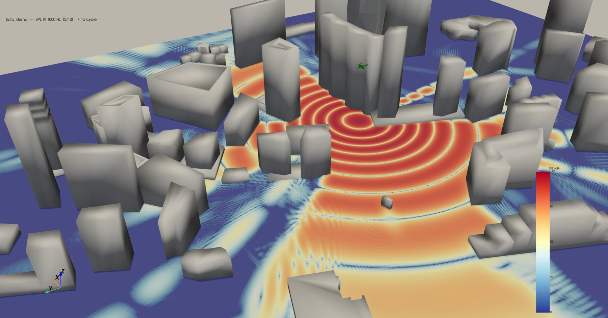

2026-07-06
A few weeks ago, I successfully defended my thesis to a room full of my colleagues, friends and family, and officially earned my Master's in Computer Science. It was a wonderful experience and it was a joy to share what I've been working on with everyone I cared about.
Climbing this hill makes me a Master of Science, a point which my friends helpfully highlighted last Tuesday when I claimed you don't use your bicep to pick things up. Though I still stand by the larger point I was making about compound exercises at the gym, I did in fact fail spectacularly at simple biology.
While I'm quite comfortable with a handful of subjects — computer science, math, physics — there are others I haven't touched since I was freed from the shackles of high school. My computer science has reached a "master's" level; my math is closer to a bachelor's; my biology, apparently, closer to a middle schooler's. It's a small version of a truth every academic runs into eventually: outside the narrow radius of your own field, your familiarity with everything else drops off exponentially — and so does everyone else's familiarity with yours.
The moment you start discussing your work with someone in another field — or even someone else in your own lab — you realize just how little you can take for granted. I'm reminded of this XKCD comic on the matter:

That's one of the hardest parts of communicating any idea, especially a scientific one: gauging how much your audience can already be assumed to know. I've never been more conscious of it than at my thesis defense.
Like I said above, my thesis defense was attended by a range of people. Of course my wonderful PI Prof. Matteo Parsani, and my defense committee, but also colleagues from my lab, my friends from disciplines spanning electrical engineering to marine science, and my family composed of my parents, three younger brothers and a cousin. As I planned for the defense, these were the people I was picturing out in front of me as I spoke.
But let me ask you this: what is the level of familiarity I am speaking to with an audience like this? My PI and committee members would understand the core of my work. These are topics which span their specializations in applied math, computer graphics and visual computing. However, those were only three members of my defense audience, and the rest of the audience were also giving up their precious lunch time to watch me present. The last thing I'd want is to present to a sea of glazed eyes and people glancing down at their phones in that way where they think they're being subtle. So, reasonable or not, I needed my communication to meet this diverse group at their respective levels and work from there.
The Audience
Let's break down exactly what I was working with here. We can split the levels of assumed familiarity into three audiences and keep them in mind during my presentation to make sure everyone is feeling engaged:
- Audience 1: My committee and colleagues with relevant knowledge. While not experienced in the exact subject, they are experienced in the greater domains which I am working within (computational physics, high performance computing, computer graphics), so they'll know some larger concepts I discuss like Hamiltonians, numerically integrated ODEs and raytracing.
- Audience 2: STEM majors. Outside of Audience 1, I can still rely on most of the room for a baseline understanding of calculus and computational algorithms, and some idea of what it might mean to "simulate sound," even if only in the abstract.
- Audience 3: Here's where things get tricky. Among all the Master's and PhD candidates, the professors and my researcher parents... were my younger brothers and my cousin, ages ranging from 9-17. For these gentlemen, I could assume almost nothing. No calculus, no physics. I believe that for the youngest of the bunch, long division was a fresh topic in class.
Now that we know our audience, I remind us of our task. For each of these groups of people I need to: catch their attention, motivate a problem, explain my solution and convince them that the problem was truly solved. While I won't bore you with the whole presentation, I will highlight the three places where I went out of my way to grab the attention of all three audiences while attempting to answer each of the questions inherent to a thesis defense.
Motivating the Problem — (Introduction)
Possibly the part I settled into the fastest was the introduction. I knew exactly what my goal was, and I was able to execute on it surprisingly fast. I needed to justify the problem my research is trying to solve: "What if we needed fast, accurate simulations of the sound in a city-like environment?" To begin with, I worked on justifying the state of the art, the kind of acoustic simulations we do already have.
Luckily, there exists one high-profile case which did this job for me perfectly. In 2003, Schiphol airport in Amsterdam added a new runway for additional traffic, and the noise carried over to a neighbouring city and was awfully loud. To solve this, the airport hired a group to build a sound-damping structure between the airport and the city. The group ran acoustic simulations, figured out which frequencies of sound were causing the issues, and built a set of zigzag ridge structures which diffracted exactly the frequencies of sound causing the issues, reportedly cutting sound in the city in half. It's almost a touching story.
Now in truth, the story itself is questionable at best. While we know it did happen, the accompanying articles are spotty on details and don't discuss the scientific process behind the design at all. But that's not the point, is it? The point is that we have a story — a truly accessible story — that everyone from the domain expert to my youngest brother can get behind. That's a trick I leaned on for the rest of the defense: go looking for the concrete case before reaching for the abstract claim, because a story earns buy-in that no bullet point ever will.
Now we know why acoustic simulations are important. Next I explain where existing methods fall flat — they're too expensive or too inaccurate to handle a complex city environment. From here, a by-name-only introduction to the method I'm using (Gaussian Beam-Tracing) and the problem that it solves (handling more complex acoustic simulations in manageable timescales), allows us to segue perfectly into the next big question.
Explaining My Solution — (Theory)
The next big question! Now that we understand your problem and know why you should care, what did you actually do? Well, in my case this splits comfortably into two categories: explaining what Gaussian Beam-Tracing is and how it handles acoustic simulations (Theory), and explaining what my package reproducing the method does (Implementation).
Now the theory is where I knew I would lose people the worst. Even colleagues, even committee members. So it's where I dedicated a majority of my time and effort. It's tempting to flash up equations and delude yourself into thinking that if you can point and talk at them for long enough people will understand. But that's just the easy way out. Especially in my case, I have the privilege of having a uniquely visualizable method to explain. So I took advantage of that fact and gave the visualizations my all. I have often been inspired by the work of Grant Sanderson of 3b1b, and especially his ability to visualize, simplify and communicate complex ideas. So as I worked on my slides, I turned to his manim library to handle the visualization of my equations. Rather than flashing the equations which are numerically integrated to govern ray movements during GBT and trying to talk it out, I showed this:
One vector at a time, you see: an existing ray direction s, which is modified by a temperature gradient ds/dt (the colored background) and carried by a wind velocity v (the grid of arrows pointing up and right). We see how these three terms are combined, and the final result is an update to our ray's path dx/dt which traces out the light blue non-linear arc. Here we omit no details — we show the full integration process. However, to a non-expert, we also show what it means to numerically integrate (evaluate functions at discrete points and take steps), and to my younger brother, we at least convey the shape of a ray path — non-linear and curving out from a sound source. That's the actual trick to talking across a spread of familiarity, I think: not three different slides for three different audiences, but one visual built with enough layers that everyone finds their own foothold in it.
I tried to carry this trend through all of the painstaking animations I made for this defense. The theory's story went: here is the state of the art (acoustic ray-tracing), and here's how it works -> here's where it falls short -> and here's where GBT solves its issues. All the while using animations to visually demonstrate what all these concepts looked like. Here's the cheeky explanation I made of the main issues with ray acoustics:
And most importantly, my magnum opus for the theoretical section. This one took the longest of any slide to get right, and for good reason — it's effectively a full 2D recreation of the GBT method itself, built in manim from scratch purely to be watched rather than computed. In practice runs, it was at this slide that things really clicked for audience members.
Making Good on Promises — (Results)
This is a pivotal moment in the presentation. The audience's patience is wearing thin, and you've made a number of grandiose claims about your method — so it's time to start delivering. For my method, this has been my claim throughout the defense: building on an existing method which has been shown to be accurate under city-like conditions (wind, changes in temperature, buildings), and which I have claimed can simulate these conditions on anything from a simple workstation, up to a world-class supercomputer. Well, in a scramble of bash scripts and PyVista visualizations the literal day before my defense (there were some technical difficulties as we were the first project to use KAUST's new GPU partition on their Shaheen III supercomputer), I was able to make good on that promise. First, an animation made from data generated on my workstation showed the method generating results for an urban air vehicle (think flying taxi) flying over the 1.5 km² mesh of Riyadh's financial district, in a grand total of 196s!
And then, as the cherry on top, we increased the method's resolution by 25x and the number of beams by 128x, and ran on 128 GH200 GPUs fresh out of the box. The result was a sharp, high-resolution plot that captures the destructive interference of the reflected sound-waves, the curvature of wavefronts and more. Now granted, there are some unphysical issues with the plot which I would have liked to address if I had more time, but, considering the circumstances, it was quite good. (The two simulations represent differing initial conditions, if you're wondering about the differences.)

Again, aiming for all three audiences, the visualization makes good on my promise. For Audiences 1 and 2, I make good on my claims about scale and compute time. Informed viewers will also note the method's handling of reflections and shadow zones (especially in the video). Those non-experts in Audience 3, including my family, still get the overall messaging: the simulation works, and the video conveys the propagation of a sound-wave in a very human way.
Wrapping up
If there's one real lesson I'm taking from all that preparation, it's that "know your audience" is a harder task than people give it credit for. It's not just about simplifying your language for the back of the room and getting precise for the front — that's just translation, and translation means you're still saying different things to different people. The harder, more useful version is finding the one artifact — a story, an image, an animation — that's true and legible at every level of familiarity in the room at once, so nobody has to be spoken past. I got there twice: with a runway-noise story that a committee member and my nine-year-old brother could both nod along to, and with a single animation dense enough to read the governing equations off of, and simple enough to just watch the rays curve and the Gaussians add up. Neither one meant dumbing anything down. It meant building one thing carefully enough that everyone in the room had somewhere to stand in it.
So the defense was a resounding (get it? re-sound-ing) success. The committee understood the theoretically and computationally dense core of my work, and a number of friends told me they did not expect to understand as much of the content as they did. A few of my peers even said it was the best Master's defense they had attended! As for my youngest brother? Well, you can't win them all...